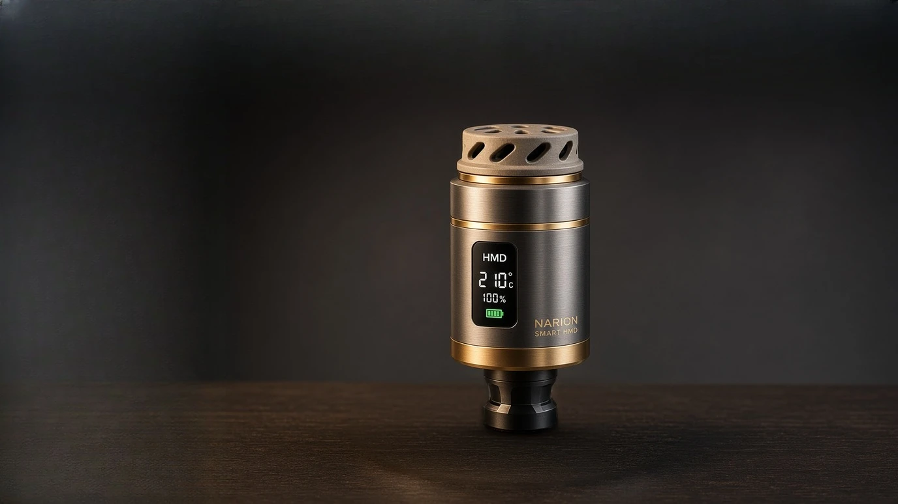
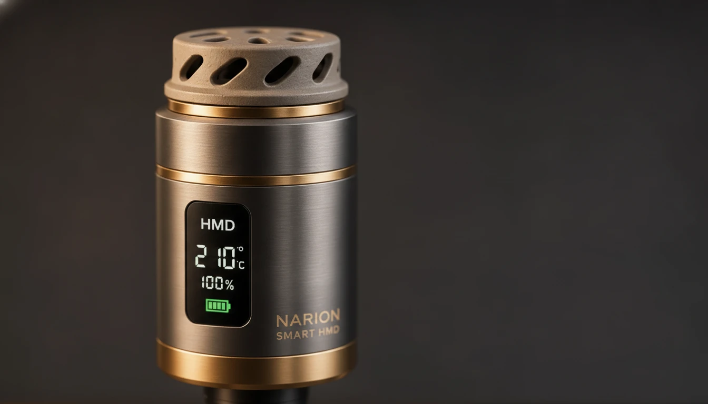

Электронная чаша для кальяна без угля • Умный каллаудБез угля. Без проводов.
Чистый вкус настоящего табака.
Дым и пепел при курении кальяна возникают не от табачного листа, а от тлеющего сверху угля. NARION Smart HMD заменяет огонь пищевой керамикой Saf, модульной батареей 74 Вт·ч и точным ПИД-контролем ±1 °C.
NARION Smart HMD — Официальный фильм о характеристиках
Узнайте о нагреве без угля, 8-слойной керамике Saf, встроенном OLED-дисплее, датчике тяги и док-станции 65 Вт Pogo-Pin в нашем озвученном фильме.
Полная текстовая расшифровка фильма (Транскрипт)
[Мягкая лаунж-музыка]
01 · Проблема угля: Розжиг угля, натяжка фольги, пепел на столе и замена углей каждые 20 минут... Эта эпоха осталась в прошлом.
02 · NARION Smart HMD: Представляем смарт-чашу NARION Smart HMD — беспроводную и безугольную систему для 100% настоящего табака.
03 · 0.нагрев без угля: Так как уголь не горит, нагрев полностью электрический. Чистый вкус без запаха гари.
04 · 8-слойная тепловая архитектура: Сотовая керамика Saf удерживает нагрев с точностью ±1°C, а экран из нано-аэрогеля сохраняет корпус ниже 42°C.
05 · OLED и активная защита: Выбирайте Soft, Medium или Hard на OLED-экране; датчик тяги усиливает нагрев при вдохе и отключает ток за 200 мс при наклоне.
06 · 74 Вт·ч и док-станция 65 Вт: Прогрев за 3,5 мин и совместимость с любым кальяном; 90–110 мин сессии и замена картриджа за 5 секунд.
07 · Финал: NARION Smart HMD. За гранью угля — чистая кальянная инженерия. Серия 01 открыта для предзаказа — narionhookah.com.
На классическом угле или NARION Smart HMD? — Лаунж и смарт-приложение
В оживлённом стамбульском лаунже гости выбирают безугольную смарт-чашу NARION, управляют температурой со смартфона через Bluetooth и экономят заведению 98% затрат на энергию.
Полная расшифровка диалогов лаунж-фильма (Транскрипт)
[Оживлённая атмосфера лаунжа и мягкая музыка]
01 · Диктор: В изысканном лаунже вечер портит только одно: щипцы с углём каждые 20 минут, летящий пепел и запах гари.
02 · Сомелье: Добро пожаловать. Приготовить кальян на классическом угле или желаете попробовать новую смарт-чашу NARION без угля?
03 · Гостья: Никакого запаха угля и пепла... Определённо выбираем смарт-чашу NARION, пожалуйста. К тому же от неё не болит голова.
04 · Сомелье: Прекрасный выбор. Фиксирую ровно 210°C на 100% настоящем листовом табаке.
05 · Диктор: Без фольги и ожидания плитки — снимается с док-станции 65 Вт и фиксируется за секунды; керамика Saf держит ±1°C.
06 · Гость: Тяга и вкус невероятно чистые... Ни горечи перегрева, ни угольной тяжести.
07 · Гостья (Смарт-приложение): Смотри, через приложение NARION на телефоне можно менять жар в реальном времени — я в одно касание выставила 215°C.
08 · Диктор: С Bluetooth-приложением регулируйте температуру прямо со смартфона без вызова официанта: более 90 минут сессии, нагрев без угля и корпус ниже 42°C.
09 · Финал: Чистое удовольствие для гостей и 98% экономии энергии для заведений — NARION Smart HMD.
Шестислойная тепловая архитектура
и живая телеметрия нагрева
Выточенное на 5-осевых станках с ЧПУ в Стамбуле шасси из авиационного алюминия Havacılık Sınıfı физически изолирует аккумулятор и электронику от жара и потока дыма.




Термостойкая техническая керамика и управление без приложений
Встроенный OLED-экран показывает точную температуру, заряд и режим прямо на корпусе.
90–110 минут автономной работы и замена Hot-Swap за 5 секунд
Высокотоковая сборка (45 А) с платой BMS 30 А; верхний картридж меняется за холодное кольцо за 5 секунд.
Динамический Draw Boost +15% и отсечка за 200 мс при наклоне
MEMS-датчик мгновенно компенсирует охлаждение воздухом при затяжке, а 6-осевой гироскоп отключает нагрев при наклоне >35°.
Холодный внешний корпус и посадка на любые чаши и шахты
Внешняя стенка остаётся холоднее 42 °C, а база садится как на классические чаши phunnel (Ø67.5 мм), так и на капсулы Ø64 мм.
Реальное время прогрева: почему 3,5 – 4,5 минуты?
Открытая тонкая спираль раскаляется за минуту, но пережигает верхний слой табака. Равномерный прогрев керамического диска Saf (Ø57.8×5 мм), тепловой базы Havacılık Sınıfı Metal (теплоёмкость 21,8 кДж) и 15 г влажного табака без пригорания занимает 3,5 – 4,5 минуты — в 3 раза быстрее розжига угля на плитке (12–15 мин) с густым мягким дымом с первой затяжки.
Ваш любимый табак, ваш привычный кальян —
без угля, фольги и щипцов.
Без плитки для угля и пепла: снимите с дока, поверните и курите
Снимите заряженный модуль с настольной станции 65W USB-C PD, зафиксируйте четверть-оборотом 45° на хрустальном кальяне NARION YALIN или своём кальяне и выберите температуру. Густой мягкий пар в гостиной без запаха розжига, искр и с нагрев без угля.
Забейте чашу или под (12–18 г)
Уложите Blonde Leaf, Dark Leaf или бестабачную смесь в съёмный под Ø64 мм или свою чашу phunnel без фольги.
Установите с магнитным замком
Поставьте на любой классический кальян через комплектные силиконовые адаптеры или на байонет 45° NARION с магнитом SmCo.
Выберите градус на OLED
Задайте 150–240 °C поворотом кольца на встроенном OLED-экране 0.96" или через веб-интерфейс по QR-коду.
3,5–4,5 мин прогрева и 90+ мин
Зелёное кольцо сигнализирует готовность к 90–110 минутам сессии; второй картридж 74 Вт·ч ставится за 5 секунд.
Профиль Blonde Leaf — светлый лист (185°C – 205°C)
Воздушная забивка 12–15 г (2 мм ниже края), мягкий прогрев ~3,5 мин при 210 °C и стабильное удержание 195 °C без перегрева сахаров.
Профиль Dark Leaf — тёмный лист Burley (215°C – 235°C)
Полуплотная забивка 14–18 г, глубокий прогрев 4,0–4,5 мин при 235 °C и рабочая полка 225 °C с мгновенным подхватом +15% Draw Boost при тяге.
Чайные и растительные смеси без никотина (175°C – 190°C)
Деликатное испарение глицерина на 180 °C: 0% никотина и полное отсутствие запаха гари в гостиной или отеле.
Равномерный прогрев чаши (3,5–4,5 мин); рост °C виден на OLED.
ПИД-температура (±1 °C) достигнута, кальян готов к курению.
Сработал датчик затяжки Akıllı Nefes Sensörü (+15% мощности).
Заряд <10% (пора сменить картридж за 5 сек) или защита IMU.
Без угля, без жара:
NARION Smart HMD R2.0
Smart HMD нагревает табак керамическим нагревательным элементом, а не горящим углём. Не нужно носить жар, использовать фольгу и менять уголь каждые двадцать минут.
| Параметр | NARION Smart HMD R2.0 |
|---|---|
| Размеры и корпус | Ø72,5 × 134,5 мм • металл авиационного класса с ЧПУ-обработкой, анодирование Type III + колпачок из кордиерита |
| Нагревательный элемент | Ø57,8 × 5 мм чистая керамика (90 Вт номинал / 150 Вт буст) • электрический нагрев без угля |
| Предварительный нагрев | 3,5 – 4,5 минуты контролируемого прогрева |
| PID, дисплей и датчик затяжки | 150–240°C (точный датчик ±1°C) + OLED 0,96" + умный датчик затяжки (буст +15%) |
| Аккумулятор и быстрая зарядка | Сменный картридж с быстрой зарядкой (~35 мин) + золотая док-станция 65 Вт с pogo-контактами + замена за 5 с |
| Термощит и IMU | Многослойная теплоизоляция (внешний корпус < 42°C) + 6-осевой IMU (отключение за 200 мс при наклоне >35°) |
| 4-уровневая аппаратная защита (Rev R2.1) | Термопредохранитель 250°C (TCO) + два датчика (точный и резервный защитный) + независимый аналоговый аварийный отсекатель 248°C + автоматическое аппаратное отключение |
Что в коробке и мойка за 2 минуты
- 1×Корпус Smart HMD R2.0 (Havacılık Sınıfı Metal + OLED 0.96")
- 2×Силовых картриджа 74 Вт·ч (180–220 мин суммарно)
- 1×Настольная док-станция 65W USB-C PD Pogo-Pin
- 2×Чаши/поды Ø64 мм + универсальные силиконовые адаптеры
Безопасная промывка водой: отсоедините верхний электронный модуль в четверть оборота и спокойно промойте нижнюю табачную чашу под тёплой водой.
Коротко о главном
Внутрь заливается жидкость или закладывается обычный табак?
Подойдёт ли устройство к моему обычному кальяну?
Нагревается ли внешний корпус и что будет при падении кальяна?
Управляйте нагревом на столе со смартфона
Отсканируйте QR-код на Smart HMD телефоном. Откроется веб-интерфейс — без установки приложения, — где вы выберете нужный профиль подачи.
Режим Soft (190 °C)
Максимальная отдача вкуса на низкой температуре — для деликатных цветочных и фруктовых смесей.
Режим Medium (215 °C)
Плотный белый дым и сбалансированная насыщенность вкуса — для классических табаков.
Режим Hard (235 °C)
Сильный удар по горлу — для опытных курильщиков, предпочитающих тёмный лист.